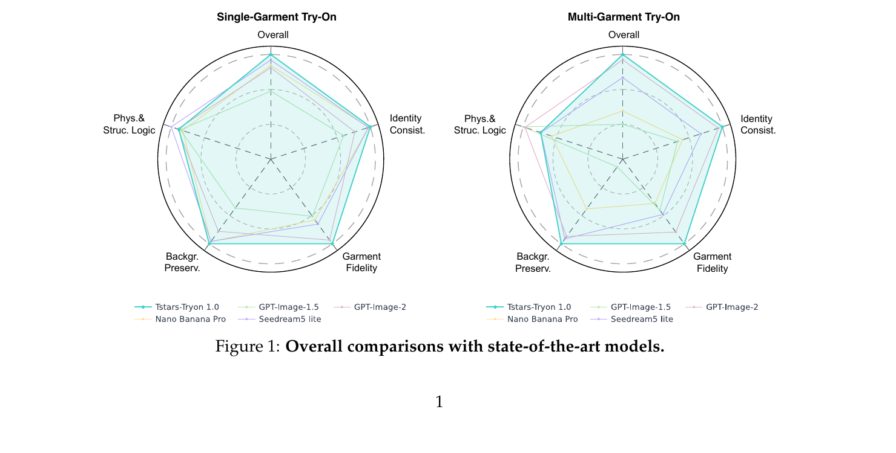
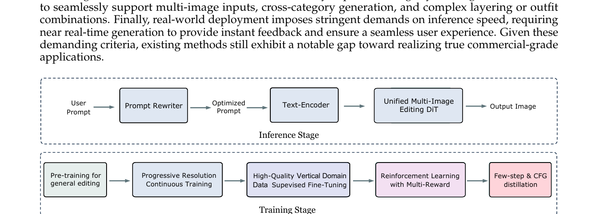
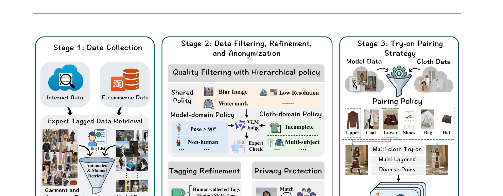
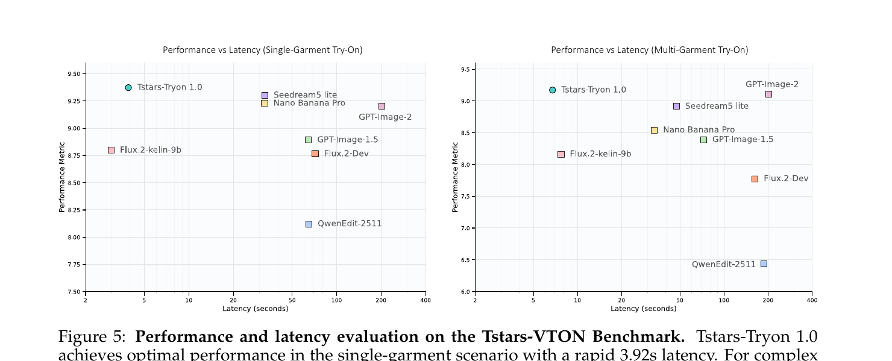
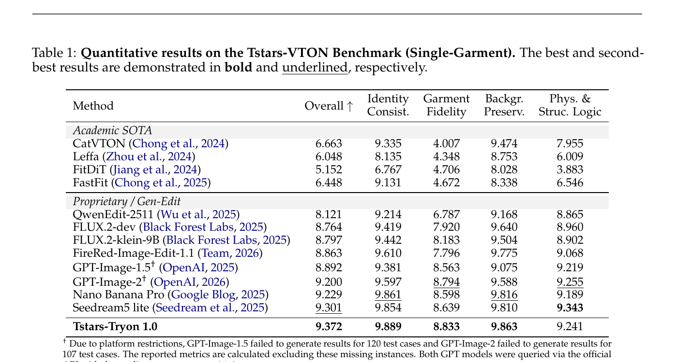
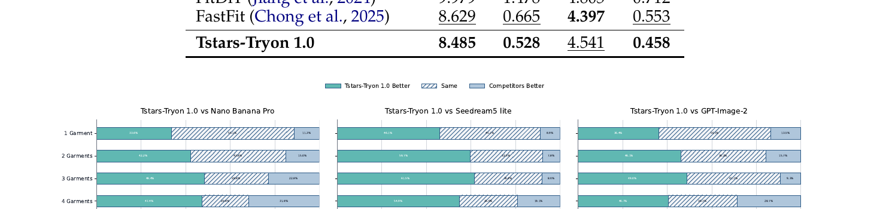

Tstars-Tryon 1.0: Robust and Realistic Virtual Try-On for Diverse Fashion Items
1. 出发点 (Motivation)
"AI 试衣"是过去 5 年生成式 AI 最有商业前景的应用之一,但研究 demo 和实际可用之间一直隔着一道墙。论文把这道墙拆成 4 块,每一块都是把"研究级"按死在 commercial-ready 门外的钉子:
- 鲁棒性不够. 学术 VTON 数据集如 VITON-HD / DressCode 几乎全是棚拍单人正面照,而真实电商场景里用户上传的照片包括极端姿势(蹲、躺、舞蹈)、过曝/暗光、宠物、3D avatar、油画、雕塑、动漫角色(论文 Fig 3 列了 9 种"野生输入")。学术模型在这些场景上几乎全崩。
- 真实感不够. 用户对"真"的容忍度极低 — 服装上的 logo / 色差 / 织物纹理稍微塑料感一点就立刻被识破。学术 SOTA(CatVTON / FitDiT)在 Tstars-VTON Bench 上 Garment Fidelity 维度只有 4.0–4.7 / 10(论文 Tab 1),而商业级要求 >8.5。
- 多件不灵活. 学术任务几乎都是"单件试穿",但真实 OOTD(Outfit of the Day)需要同时穿上衣 + 下装 + 外套 + 鞋 + 包 + 帽。多件之间还有分层逻辑(外套敞开露出内搭、围巾覆盖在毛衣外面)、语义遵循("保持鞋子不变")。大部分模型在 ≥3 件叠穿时出现 item omission 或 identity degradation(论文 §3.1 把这点定义为 "performance collapse")。
- 推理太慢. Flux.2-dev / QwenEdit-2511 这类通用 image edit 大模型(扩散 + 多步 + CFG)在 H200 上跑一张图就要 100~200s。电商 C 端不能让用户等 30s 以上 — 这等于 -50% 的留存。
已有路径的不足:
- 传统 inpainting 路线(CatVTON / FitDiT / Leffa):把人体上"要换衣服"的区域 mask 掉,然后做条件 inpainting。优点是 identity 容易保住(背景和脸完全没动);缺点是无法处理多件叠穿、复杂遮挡、姿势变化 — mask 越大,模型自由度越大,反而越容易崩;mask 越小,根本无法塞进新外套。Tab 1 里 CatVTON 单件 Overall 6.66 / 10。
- 通用 image-edit 大模型(GPT-Image-2 / Nano Banana Pro / Seedream5 lite):效果好但贵且慢,且对"严格保留 identity + 背景"控制力差(GSB 评测中"换造型时把脸也换了"是高频失败)。
本文 TL;DR: 不做 inpainting,把 try-on 重新公式化为通用多图像编辑;基于 MMDiT 主干 5B 参数;五阶段训练 — 预训 → 渐进分辨率 → 高质 SFT → DiffusionNFT 多奖励 RL → CFG + Step 蒸馏 — 同时拿到工业级效果(Overall 9.372 / 10,跨 5 个维度全部第一或第二)和工业级速度(3.92s 单件 / 6.74s 6 件)。

2. 方法 (Method)
核心思想 (类比)
把传统 VTON 当成 inpainting 就像"把照片上人脸的下半张抠掉,让模型按描述把'微笑'画回去" — 这是填空;一旦填空区域横跨多件衣服、复杂遮挡或全身大动作,模型就 hold 不住。
Tstars-Tryon 1.0 改成"把多张图(主体 + 衣 + 鞋 + 包) + 一句话"作为 in-context 序列丢进同一个 MMDiT,让模型像做"一句话改写一张图"那样处理多图编辑 — 这是编辑。两者数学上都是条件扩散,但条件的形态不同:
- Inpaint: 条件 = mask + masked image + (单张)cloth reference,模型只能动 mask 内部。
- Multi-image edit: 条件 = 主图 + 多张 reference(≤6) + 文本 prompt,模型自己学会"哪儿该动、哪儿该保留"。
这是 2024 年 SD3 的 MMDiT 和 2025 年一众 image-edit 大模型(Nano Banana / GPT-Image-1.5 / FLUX.2 / QwenEdit)走的同一条路 — 论文把它专门 vertical-fine-tune 到 try-on。

2.1 任务范式: 从 inpaint 到 edit
记主体图为 \(x_p\),\(k\) 张 reference 服装/配饰图为 \(\{x_r^{(1)},\dots,x_r^{(k)}\}\)(\(k \in [1,6]\)),文本指令为 \(c\)。传统 inpainting 范式需要一个额外 mask \(m\):
—— 翻译: 把人身上的衣服抠掉后,丢进生成器,让它根据(单张)cloth 参考和文本把衣服画回去。
这里 mask 必须提前算(用 SCHP 或 DensePose 做人体解析),而且只支持 \(k=1\)。CatVTON 就是这条路 — 见后面的代码引用。
论文采用的多图编辑范式把 mask 完全去掉,直接把所有图当成 in-context tokens:
—— 翻译: 主体图 + 1~6 张 reference + 文本一起丢进 DiT,网络自己 attention 决定"哪儿是衣服该贴上去、哪儿是脸要保留"。
注意: 论文没有给出 \(G_\theta\) 的具体公式 / 结构图 — 只在介绍里说"unified MMDiT architecture (Esser et al., 2024)"一句带过。这是 §5 要批判的一个点。
2.2 MMDiT 统一架构(论文未细说)
论文唯一对架构的描述是: "Tstars-Tryon 1.0 utilizes a unified MMDiT (Esser et al., 2024) architecture capable of simultaneously processing and coordinating multiple reference images, ensuring the natural fusion of full-body outfits." 加上 "primary DiT model is streamlined to 5B parameters"。
MMDiT(Stable Diffusion 3, Esser et al., 2024)的核心是多模态联合注意力: text token 和 image token 在同一个 transformer block 里互相 attend(各有 separate QKV 投影,但 attention 在 concat 后的序列上计算)。对 try-on 任务的扩展应该是把多张参考图的 token 拼到序列里,让 self-attention 自动跨图融合 — 这是 in-context image editing 标准做法,但论文细节(token 怎么排、有没有 RoPE-2D、position encoding 怎么标记"这张是主图、那张是衣服")全部省略。
作为参照,我们看 CatVTON(论文 baseline)是怎么处理 "多图条件" 的 — 它做的是old-school inpainting,把 cloth condition 通过 VAE encode 后沿 spatial 维 concat 到 noisy latent,再用 self-attention 把两半融合:
repo/model/pipeline.py:L125-L171 — CatVTON 的核心 forward:VAE encode 主体和衣服 → spatial concat → unet 单 forward → CFG。注意 concat_dim=-2 是 y 轴拼接 — 衣服图被叠在主体图下方,共享一个 self-attention。
concat_dim = -2 # FIXME: y axis concat
# Prepare inputs to Tensor
image, condition_image, mask = self.check_inputs(image, condition_image, mask, width, height)
image = prepare_image(image).to(self.device, dtype=self.weight_dtype)
condition_image = prepare_image(condition_image).to(self.device, dtype=self.weight_dtype)
mask = prepare_mask_image(mask).to(self.device, dtype=self.weight_dtype)
# Mask image
masked_image = image * (mask < 0.5)
# VAE encoding
masked_latent = compute_vae_encodings(masked_image, self.vae)
condition_latent = compute_vae_encodings(condition_image, self.vae)
mask_latent = torch.nn.functional.interpolate(mask, size=masked_latent.shape[-2:], mode="nearest")
# Concatenate latents
masked_latent_concat = torch.cat([masked_latent, condition_latent], dim=concat_dim)
mask_latent_concat = torch.cat([mask_latent, torch.zeros_like(mask_latent)], dim=concat_dim)
# Prepare noise
latents = randn_tensor(masked_latent_concat.shape, generator=generator, ...)
self.noise_scheduler.set_timesteps(num_inference_steps, device=self.device)
timesteps = self.noise_scheduler.timesteps
# CFG
if do_classifier_free_guidance := (guidance_scale > 1.0):
masked_latent_concat = torch.cat([
torch.cat([masked_latent, torch.zeros_like(condition_latent)], dim=concat_dim),
masked_latent_concat,
])
mask_latent_concat = torch.cat([mask_latent_concat] * 2)
for i, t in enumerate(timesteps):
non_inpainting_latent_model_input = torch.cat([latents] * 2) if do_classifier_free_guidance else latents
inpainting_latent_model_input = torch.cat(
[non_inpainting_latent_model_input, mask_latent_concat, masked_latent_concat], dim=1)
noise_pred = self.unet(inpainting_latent_model_input, t, encoder_hidden_states=None)[0]
对比可以看出 CatVTON 走的是"把所有信息硬拼成一张大图"路线,这天然只能处理 1 张参考图(更多就会导致拼接图无限拉长,无法支持 6 张)。Tstars-Tryon 改成 MMDiT 后,reference 是独立 token 序列,理论上 \(k\) 任意 — 但具体怎么 tokenize,论文没说。
2.3 五阶段训练流水线
论文 §1(Introduction)把训练拆成 5 个 stage,但每个 stage 的损失函数都没写。下面是我根据上下文推断的对应学术 / 工程范式:
- Pre-training for general editing. 在 task-balanced 和 content-balanced 通用编辑数据集上预训,渐进难度上升。目标:让 DiT 拿到 broad world knowledge + 通用编辑能力(类似 InstructPix2Pix / Emu Edit 那种)。损失推断为标准 flow matching: $\(\mathcal{L}_{\text{FM}} = \mathbb{E}_{x_0, x_1, t}\left[\| v_\theta(x_t, t, c) - (x_1 - x_0) \|^2\right]\)\(其中\)x_t = (1-t)x_0 + t x_1$,\(x_0\) = ground truth target,\(x_1\) = noise。
- Progressive Resolution Continuous Training. 把分辨率逐步提升 — 这是 SD3 系列、Flux 系列的标准做法,小分辨率练 layout,大分辨率练细节。论文说他们的 infra 支持"variable resolutions + arbitrary number of reference images" via Data Packing(Dehghani et al., 2023)。
- High-Quality Vertical Domain SFT. 在精挑细选的 try-on 垂直域数据上 SFT。这一步对应论文 Fig 6 的"Data Curation Pipeline" — 三阶段(Collection → Filter & Anonymize → Try-on Pairing)。
- Reinforcement Learning with Multi-Reward. SFT checkpoint 上跑 DiffusionNFT(Zheng et al., 2025),用 group-level 采样 + 多维度 reward + 组内 relative advantage 估计。下文 §2.4 展开。
- Few-step & CFG distillation. Yin et al., 2024 风格的 Step Distillation + CFG distillation,把推理压到 ~6-8 步 + 无需 dual-forward CFG,实现 3.92s / 6.74s 推理。

2.4 多奖励 RL —— DiffusionNFT(Zheng et al., 2025)
论文 §1 显式声明 RL 阶段用的是 DiffusionNFT(Diffusion Negative-aware Fine-Tuning,Zheng et al., NeurIPS 2025)— 一个 GRPO 风格的 diffusion RL 框架:不需要 critic,用 group 内 reward 的相对值估 advantage,然后同时把正样本拉近、负样本推远。论文的话: "the policy is further optimized with DiffusionNFT to favor positive trajectories over negative ones."
原始 DiffusionNFT 在 SD3 上的 policy loss 大致如下(公开实现):
—— 翻译: 把每个 sample 的 reward $r$ 减去同组平均、除以同组标准差得到 advantage $A$;归一化到 $[0,1]$ 得到"它是好样本的概率" $\tilde r$。然后构造一个"想往那里走的方向" $\hat v^+$(混合当前 policy 和 old)和"反方向" $\hat v^-$。最终 loss 是: 好样本朝 $\hat v^+$ 推 + 坏样本用反方向推($\hat v^-$ 等价于"远离 old → 当前"延伸出去的位置)+ KL 锚到 ref。
论文里把这个机制用在多维度 reward: garment consistency, outfit quality, generation stability — 但没给出 reward 的具体加权和实现。我们用 DiffusionNFT 公开实现的 multi_score 函数 看"多奖励组合"实务长什么样:
repo-diffusionnft/flow_grpo/rewards.py:L256-L305 — multi_score: 把多个 reward(OCR / ImageReward / PickScore / Aesthetic / HPSv2 / CLIPScore 等)按字典 {name: weight} 加权求和,这就是 paper 里"multi-dimensional reward pipeline"在公开框架里的对应实现。
def multi_score(device, score_dict):
score_functions = {
"ocr": ocr_score,
"imagereward": imagereward_score,
"pickscore": pickscore_score,
"aesthetic": aesthetic_score,
"jpeg_compressibility": jpeg_compressibility,
"unifiedreward": unifiedreward_score_sglang,
"geneval": geneval_score,
"clipscore": clip_score,
"hpsv2": hpsv2_score,
}
score_fns = {}
for score_name, weight in score_dict.items():
score_fns[score_name] = (score_functions[score_name](device)
if "device" in score_functions[score_name].__code__.co_varnames
else score_functions[score_name]())
def _fn(images, prompts, metadata, only_strict=True):
total_scores = []
score_details = {}
for score_name, weight in score_dict.items():
scores, rewards = score_fns[score_name](images, prompts, metadata)
score_details[score_name] = scores
weighted_scores = [weight * score for score in scores]
if not total_scores:
total_scores = weighted_scores
else:
total_scores = [total + weighted for total, weighted in zip(total_scores, weighted_scores)]
score_details["avg"] = total_scores
return score_details, {}
return _fn
对 try-on 任务,论文可能把 reward 替换成专用的: garment-fidelity reward(CLIP/DINO + cloth ref 距离)、identity reward(ArcFace cosine)、background-preserv reward(masked PSNR)等。这些都没在论文里给出。
下面是 DiffusionNFT 公开实现里"正样本拉近 + 负样本推远"的核心 5 行(简化自 train_nft_sd3.py L934-L960):
repo-diffusionnft/scripts/train_nft_sd3.py:L934-L960 — DiffusionNFT 的 NFT loss 实现:用 normalized advantage $r$ 在 positive 和 negative 两个目标间做凸组合,实现"好样本朝那里走、坏样本反过来"的统一表达。
# reward → normalized advantage in [0,1]
normalized_advantages_clip = (advantages_clip / config.train.adv_clip_max) / 2.0 + 0.5
r = torch.clamp(normalized_advantages_clip, 0, 1)
# positive direction: mix current policy with old
positive_prediction = config.beta * forward_prediction \
+ (1 - config.beta) * old_prediction.detach()
# implicit negative direction: extrapolate past old
implicit_negative_prediction = (1.0 + config.beta) * old_prediction.detach() \
- config.beta * forward_prediction
# x_0 predicted under both directions (flow matching parametrization)
x0_prediction = xt - t_expanded * positive_prediction
negative_x0_prediction = xt - t_expanded * implicit_negative_prediction
# adaptive weights (clip 0 to avoid /0)
weight_factor = torch.abs(x0_prediction .double() - x0.double()).mean(...).clip(min=1e-5)
negative_weight_factor = torch.abs(negative_x0_prediction.double() - x0.double()).mean(...).clip(min=1e-5)
positive_loss = ((x0_prediction - x0)**2 / weight_factor ).mean(...)
negative_loss = ((negative_x0_prediction - x0)**2 / negative_weight_factor).mean(...)
# combine: good → pull to +, bad → push from -
ori_policy_loss = r * positive_loss / config.beta \
+ (1.0 - r) * negative_loss / config.beta
这个 loss 形式是 DiffusionNFT 的标志性贡献,Tstars-Tryon 直接套用 — 关键改动应该在 reward 设计和数据(论文没披露)。
2.5 CFG 蒸馏 + Step 蒸馏
5B 的 MMDiT 在 H200 上跑 50 步 + CFG(每步 2× forward)单图就是 ~10 秒级,6 张参考的多件场景更慢。论文用两个标准技巧把它压到接近 1 步水平:
- CFG distillation: 训一个学生网络,直接输出 \(\epsilon_\theta(x_t,c) + s\cdot(\epsilon_\theta(x_t,c) - \epsilon_\theta(x_t,\emptyset))\) 的结果 — 单次 forward 等价于教师的双 forward。论文说 RL stage 的 DiffusionNFT 让 CFG-free inference 同等效果("yields strong CFG-free inference performance")。
- Step distillation (Yin et al., 2024 = DMD2): 教师 50 步,学生 4-8 步逼近教师的 score 分布。论文最终单衣 3.92s,多衣 6 件 6.74s(H200)。
对比基线: QwenEdit-2511 / Flux.2-dev 单图 ~100s,Flux.2-klein-9B ~50s。Tstars 比开源 SOTA 快 ~25×,这是工程层面最重要的差异化 — 也是为什么能上淘宝 C 端。

2.6 Tstars-VTON Benchmark
论文除了发模型还发了一个 benchmark — 这部分(§2)是写得最细的部分,事实上比 method 还细。要点:
- 1780 paired samples,5 个 garment + 3 个 accessory 类目(总 8 类),465 个细分子类,每条样本 1-6 件叠穿。
- Hierarchical filtering: 共享策略(blur, watermark, 低分辨)→ 模特域策略(pose >90°、非人体、多主体)→ 衣服域策略(VLM-judge 不完整 / 多主体)→ 专家终审。
- Privacy: 所有真人照通过 ArcFace + skin/age/gender 匹配换脸到 licensed face library,确保不能反推真人。
- Evaluation: VLM-driven 评分,1-10 Likert,4 个维度(Identity Consistency / Garment Fidelity / Background Preservation / Phys. & Struc. Logic) + Overall。
- Unpaired 评估:模特库 / 衣服库 decouple,所有组合都能配对,极大扩展 combinatorial diversity。
这是论文最实在的开源贡献 — 模型不开,但 benchmark 数据集发到 HuggingFace 和 ModelScope。值得后续 try-on 研究采用,因为 VITON-HD 和 DressCode 真的已经过拟合到无法区分模型了。
3. 结论 (Key Findings)
3.1 量化指标
论文在三个 benchmark 上做评估: 自家 Tstars-VTON Bench(主),VITON-HD(学术,纯零样本),DressCode(学术,纯零样本)。
Tstars-VTON 单件(Tab 1):
- 学术 SOTA: CatVTON 6.66 / FastFit 6.45 / FitDiT 5.15 — Garment Fidelity 维度只有 4.0–4.7,在复杂场景里失败明显。
- 商业大模型: Seedream5 lite 9.30 / Nano Banana Pro 9.23 / GPT-Image-2 9.20。
- Tstars-Tryon 1.0: 9.372 Overall — 5 个维度 4 个第一(Identity 9.889, Garment 8.833, Background 9.863),只 Phys.&Struc.Logic 9.241 比 Seedream5 的 9.343 略低。

Tstars-VTON 多件(Tab 2): 商业模型在多件场景里有明显跌幅(论文称 "performance collapse"):
- FireRed-Image-Edit-1.1 从单件 8.863 暴跌到多件 4.822(-45%) — 直接散架。
- QwenEdit-2511 从 8.121 跌到 6.441(-21%)。
- Tstars-Tryon 1.0 从 9.372 仅跌到 9.171(-2.1%),稳定性是其他模型 10x 以上。
3.2 人评 GSB(Good/Same/Bad)
对三个最强商业模型做盲评对比(随机匿名,人工裁判):
- vs Nano Banana Pro: Win 41.1% / Tie 41.6% / Lose 17.3%
- vs GPT-Image-2: Win 41.9% / Tie 42.6% / Lose 15.5%
- vs Seedream5 lite: Win 54.4% / Tie 36.6% / Lose 9.0%
更重要的稳定性 trend: 衣服件数越多,Tstars-Tryon 1.0 的 Win rate 越高:
- vs Nano Banana Pro: 1 garment Win 33.6% → 5 garments Win 54.8%(几乎翻倍)
- vs Seedream5 lite: 1 garment Win 46.1% → 5 garments Win 70.2%
- vs GPT-Image-2: 1 garment Win 36.4% → 5 garments Win 50.0%
解释:商业大模型在简单单件时多数能产生 acceptable 结果(高 Tie 率);但任务难度上升时,Tstars 的训练流水线优势凸显出来。

3.3 学术基准零样本(Tab 3)
在 VITON-HD 和 DressCode 上,即便训练数据完全没包含这两个数据集,Tstars-Tryon 1.0 依然在 unpaired setting 拿到 SOTA:
- VITON-HD: FID 8.485(vs FastFit 8.629 / FitDiT 9.979)、KID 0.528(vs FastFit 0.665 / FitDiT 1.478)
- DressCode: FID 4.541 / KID 0.458(KID 第一,FID 略输 FastFit 的 4.397 — 注意 FastFit 是在 DressCode 上训过的)
结论: 强 generalization,通过 vertical-fine-tune 的通用编辑模型在 VTON 学术基准上也能直接 SOTA。
4. 实现细节 (Implementation Notes)
需要先说: 本论文 NO 官方代码开源。我用 CatVTON(学术 SOTA baseline)和 NVlabs/DiffusionNFT(论文显式声明的 RL 框架)做交叉对照。下面所有细节里 "[paper §X]" 标记来自论文,"[from-deps]" 标记来自上述两个依赖 repo,其他是合理推断。
- 模型规模: 5B 参数 [paper §1 last bullet]。比对照: SD3-Medium 2B / SD3.5-Large 8B / Flux.2-klein 9B / FLUX.2-dev ~12B。"streamlined to 5B" 暗示模型从更大的初始 checkpoint 蒸下来。
- 推理硬件 + 时长: H200 GPU, 单件 3.92s,5 张 reference 多件 6.74s [paper Fig 5 caption]。如果用 8 个 NFE 推算,等价于每步 ~0.5s — 这跟 DMD2 蒸过的 SD3 在 H100 上差不多。
- Data Packing: 论文 §1 "leveraging Data Parallelism, Tensor Parallelism, and adapting Data Packing strategies (Dehghani et al., 2023) for Diffusion Transformers, we have eliminated the computational waste typically associated with traditional bucketing strategies." — 关键工程贡献,但没有任何代码细节。Dehghani 等的 NaViT 是参考。
- Prompt Rewriter: 单独训了一个改写模型放在推理流水线前 [paper Fig 4]。结构 / 参数量 / 训练数据均未披露 — 推测是中小型 LLM(7B / 14B Qwen 之类)+ try-on 指令对 SFT。
- RL Algorithm: DiffusionNFT [paper §1, citing Zheng et al., 2025]。从 SFT checkpoint 出发,group-level trajectory sampling,组内 relative advantage,正负 trajectory 都用 [from-deps:
scripts/train_nft_sd3.py:L934-L960]。 - Reward 维度: garment consistency / outfit quality / generation stability [paper §1] — 3 项,但具体每项的实现(模型?metric?human?)论文没说。多奖励组合实务参考 [from-deps:
flow_grpo/rewards.py:L256]。 - 蒸馏 Recipe: CFG distillation + Step distillation (Yin et al., 2024 = DMD2)[paper §1]。DMD2 的标准配方是: 学生匹配教师的 score 分布,KL 散度形式,可以 4-8 步收敛。
- Privacy 换脸 stack: ArcFace 匹配相似度 → 把真人脸换成 licensed face library 里最像的合成脸 → 二次人工核验 [paper §2.3]。代码未公开。
- Inference 流水线 vs 训练: 推理时只跑蒸馏完的 4-8 步 + CFG-free single forward [Fig 4 Inference Stage];训练时是完整 50 步 + dual-CFG。Production-side 推理跟训练几乎是两个模型(蒸馏前后)。
论文与代码 / 公开 baseline 的明显 gap:
- 架构层面零细节. "MMDiT" 一句话带过,具体 block 数 / token 排布 / multi-ref position encoding / cross-attention layout — 全部缺失。这是技术报告的典型问题 — 把算法当商业机密,只放结果。
- Reward 函数缺失. 三个 reward 维度名字给了,但实现完全没说。garment consistency 用 CLIP 还是 DINO 还是专门的 cloth classifier?identity 用 ArcFace 还是 InsightFace?都没披露。无法复现。
- 训练数据规模缺失. 论文反复说 "large-scale, high-quality" 但没给数字。SFT 数据是 100 万对?1000 万?GRPO/NFT 阶段每 epoch 多少 sample?都不给。
- 计算预算缺失. 没有 GPU-hours,没有训练时长,没有 carbon footprint。对比同期开源工作(SD3 paper 给出了所有这些)— 这一点上 paper 完全 closed。
- Ablation 缺失. 没有任何 ablation table 证明"5 阶段训练里哪一阶段最关键、去掉某阶段会差多少"。RL 的增益、蒸馏的增益、prompt rewriter 的增益,全都没拆开。
结论: 本文是commercial product report,不是 reproducible research paper。第三方在没有官方代码 + 没有训练细节 + 没有 ablation 的情况下,无法复现。"Tstars-VTON Bench 开源"是唯一可以复用的部分。
5. 批判性总结 (Critical Assessment)
5.1 优点
- 问题诊断准确. Inpainting → multi-image edit 的范式转换抓住了商业 VTON 落地的真正瓶颈(多件叠穿、复杂遮挡、in-the-wild 输入)。学术界还在卷 VITON-HD 单件指标的时候,这篇直接说"该 benchmark 已经过拟合到没区分度"。
- 速度真的快. H200 单件 3.92s vs 开源 SOTA ~50-200s,差 25-50 倍。如果数字属实,这是 C 端能否上线的决定性差异。
- 多件场景的稳定性. 5 件外套 Win rate vs Seedream 5 lite 70.2%,从 1 件到 5 件 Win rate 单调上升 — 这个 trend 比绝对数字更说明问题:Tstars 在 task complexity 升级时更稳,这是工程化训练流水线的真正价值。
- Benchmark 开源. Tstars-VTON Bench(1780 paired samples + 多维 VLM 评分协议)是这篇论文最实在的贡献。VITON-HD/DressCode 已经过时,新 benchmark 有方法论上的 hierarchical filtering + privacy-preserving + unpaired evaluation 三个改进,可能成为 next-gen VTON 评测标准。
- 规模化部署证据. 已经在淘宝 App 上线,日峰值千万级请求 — 不是 demo,不是 research prototype,真正经过 C 端流量验证。
5.2 不足 / 疑点
- 整篇是"产品宣传 + benchmark 论文",不是 method 论文. 全文 24 页,但*没有 §*叫"Method"。所有方法描述压缩在 §1 Introduction 的 6 个 bullet 里,每个 bullet 一句话。读完仍然不清楚 5B MMDiT 怎么把多张 reference 编码进去、reward 怎么算、蒸馏 schedule 长什么样 — 这些是论文里最重要的部分。
- VLM-driven 评分循环嫌疑. 自家提出的评分标准(VLM-driven, 4 维度 Likert)很可能在训练阶段就被用作 reward signal — 那么"在自家 benchmark 上拿第一"就是在跟自己的 reward 比,几乎注定赢。论文没有用外部独立 VLM scorer 复测,人评的 Tie 率高达 40+% 也间接说明区分度不大。
- Latency 数字不可比. 论文 Fig 5 中开源模型(QwenEdit / Flux.2)的 latency 是在 H200 上自家跑出来的,商业 API(GPT-Image-2)的 "latency" 包含网络延迟。"GPT-Image-2 慢 200s"很大一部分是 API 排队 — 跟模型本身效率不直接可比。论文 caption 自己承认 "for reference only"。
- 0 ablation. 5 个训练 stage 哪一个最关键?去掉 RL 阶段 / 蒸馏阶段会差多少?Prompt Rewriter 不要,会差多少?Multi-reward 里哪个 reward 权重影响最大?— 一个 ablation table 都没有。商业 paper 经常这样,但从研究角度这是致命缺失。
- 无代码、无权重. 数据集发了 HF/ModelScope,但模型权重、训练代码、推理代码全部不开放。学术界无法验证、无法 build-upon。这跟 SD3 / Flux 在 paper 发布同时放代码的传统形成对比。
- Baseline 选择有 cherry-pick 嫌疑. 学术 baseline 全是 2024 的(CatVTON / Leffa / FitDiT),没有 2025 的更新 try-on 工作(如 BootComp、IDM-VTON)。商业 baseline 选了 GPT-Image-2 / Nano Banana Pro / Seedream5 lite,但没比 Midjourney v8 / Recraft / Ideogram 这些也擅长 commercial editing 的。
- Privacy 换脸的视觉伪影. "Reference-guided face swapping + 多步迭代" 这套换脸如果出现伪影,模型在训练时就会学到"皮肤接缝可以容忍" — 然后在真实用户照片上也产生伪影。论文没讨论这个 risk。
- "无 mask 多图编辑"的鲁棒性 vs 控制力. 没有 mask 意味着模型完全自由决定改哪儿。Demo 看着好,但 corner case(用户上传一张照片只想换上衣,模型把背景也微调了)的失败率论文没给。学术 inpainting 那条线虽然 cap 低,但下限稳定 — 这是用户体验上的真正区别。
5.3 适用 vs 不适用
- ✅ 商业电商落地: 任何需要近实时 VTON + 多件叠穿 + 用户体验优先的 C 端场景,Tstars-Tryon 1.0 (或同类系统) 是当前最优选。
- ✅ VTON benchmark 研究: Tstars-VTON Bench(1780 paired,8 类,VLM 评分协议)可以替代 VITON-HD/DressCode,值得在新 paper 里采用。
- ❌ 学术 try-on research: 没有可复现的方法 / 代码 / ablation,无法作为 academic baseline 引用 — 只能引为"商业系统对比"。要复现,只能基于 MMDiT + DiffusionNFT 公开实现 + 自家数据从头开始。
- ❌ 研究 reward 设计 / RL 细节: paper 完全没披露 reward 实现,这条线得读 DiffusionNFT 原论文 / repo,而不是这篇。
- ❌ 小数据低算力场景: 5B 模型 + 多阶段训练 + 蒸馏,资源门槛非常高,不是个人 / 小团队可以复现的。
5.4 进一步阅读
- MMDiT 的源头: Esser et al., "Scaling Rectified Flow Transformers for High-Resolution Image Synthesis" (SD3, arxiv 2403.03206) — 看 MMDiT 怎么处理 text+image 联合 attention。
- RL 框架: Zheng et al., "DiffusionNFT: Online Diffusion Reinforcement with Forward Process" (2025) — 论文显式声明的 RL backbone,公开 code。
- Step Distillation: Yin et al., "Improved Distribution Matching Distillation for Fast Image Synthesis" (DMD2, NeurIPS 2024) — Tstars 蒸馏阶段的标准配方。
- Data Packing: Dehghani et al., "Patch n' Pack: NaViT, a Vision Transformer for any Aspect Ratio and Resolution" (NeurIPS 2023) — Tstars 训练 infra 对应的可变分辨率打包技术。
- 学术 try-on 对照: CatVTON (Chong et al., ECCV 2024) code;FitDiT (Jiang et al., 2024);FastFit (Chong et al., 2025)。
- 多图 in-context editing: InstructPix2Pix / Emu Edit / OmniGen / Step1X-Edit — Tstars-Tryon 走的是这条路的 vertical-fine-tune 版本。
- 商业对照: GPT-Image-2 model card / Nano Banana Pro blog post / Seedream 5 lite tech blog / FLUX.2 release notes — 都是 Tstars 在 paper 里直接比较的对象。
讨论 / Comments
评论托管在本仓库的 GitHub Discussions, 需 GitHub 账号。